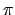
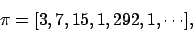
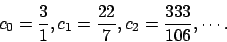
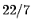
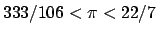
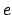
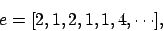
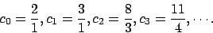

suivant: Une application: l'équation de
monter: Approximation des nombres irrationnels
précédent: Fractions continues infinies
Dans le cas de nombres irrationnels non quadratiques, le développement en fraction continue ne présente malheureusement plus de structure particulière; cependant, les fractions continues ne sont pas inutiles pour la cause et plus particulièrement, les convergents permettent de donner des approximations rationnelles pour ces nombres irrationnels.
Traitons le cas du nombre  qui est bien sûr un irrationnel non quadratique4, on trouve facilement que

qui ne présente plus aucun caractère périodique. Calculons alors les premiers convergents de cette fraction continue. On trouve que

On remarque ainsi que l'approximation classique du nombre par la fraction  n'est pas fortuite. On peut même voir que
, cela reste vrai pour tous les convergents; en fait, le nombre est toujours compris entre deux convergents consécutifs.
A titre d'information, voici le développement en fraction continue du nombre ,

et voici les premiers convergents

suivant: Une application: l'équation de
monter: Approximation des nombres irrationnels
précédent: Fractions continues infinies
2005-09-23